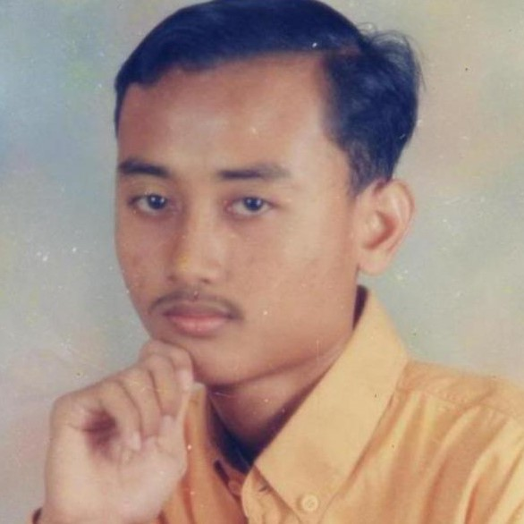
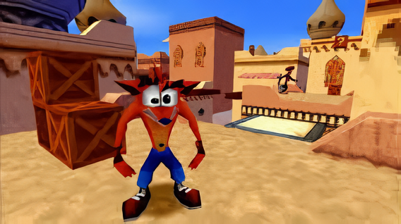

5 Game PS1 Terbaik Sepanjang Masa yang Bikin Nostalgia di Tahun 2023

by Derren Amadeo
1 HOUR AGO

Konsol game PlayStation 1 atau biasa disebut PS1 milik Sony memberikan banyak kenangan bagi para gamer. Konsol gaming tersebut menghadirkan banyak list game terbaik dengan berbagai genre, fitur gameplay dan petualangan seru
yang akan selalu diingat para gamer pada masa kecil mereka. Ada banyak sekali daftar game PS1 petualangan terbaik di dunia yang juga populer bagi gamer.
Namun, mungkin di antaramu masih ada yang belum tahu game apa saja yang masih populer, terbaik, dan seru untuk dimainkan di tahun 2023 ini dengan emulator kesayangan. Pada kesempatan kali ini, kami akan memberikan informasi
mengenai 5 game PS1 terbaik yang seru dan bikin nostalgia Ditahun 2023.
1. Crash Bandicoot

Game PS1 terbaik di dunia yang seru dan bikin nostalgia tahun 2023 pertama dalam daftar ini adalah Crash Bandicoot. Secara spesifik saya menunjuk pada 3 game-nya, yaitu Crash Bandicoot, Crash Bandicoot 2: Cortex Strikes Back
dan Crash Bandicoot: Warped. Kalian sendiri pasti setuju kenapa ketiga game ini masuk dalam daftar game PlayStation 1 terbaik, bukan?
Game ini menghadirkan permainan ber-genre platform dimana pemain akan berpetualang di berbagai macam lokasi dengan banyak rintangan, musuh dan boss yang harus mereka hadapi. Bagi gamer, game Crash Bandicoot menjadi salah satu
sosok maskot nostalgia di masa kecil mereka, mulai dari senang, bahagia sampai marah karena ada beberapa stage yang pernah bikin mereka kesal.
2. Harvest Moon: Back To Nature

Setelah sebelumnya game yang saya cukup ngeselin untuk dimainin karena stage nya yang susahnya gak ngotak. Sekarang kita pindah ke game yang santai dan asik untuk dimainin, Apa lagi kalo bukan Harvest moon: BTN.
Harvest Moon: BTN adalah game farming simulator yang memberikan nuansa santai dimana pemain diharuskan mengurus pertanian. Gak hanya pertanian kita juga bisa berternak, mining, mancing, bahkan nikah dan punya anak. Dan juga
ada banyak event menarik yang bikin gamenya gak monoton untuk dimaninin. Game ini cocok banget buat kamu yang lagi stres atau jenuh ama kehidupan kota yang gitu-gitu aja
3. Resident Evil

Dari sekian banyak game Resident Evil di konsol PS1, saya lebih memilih game Resident Evil 3: Nemesis sebagai PlayStation 1 petualangan terbaik dengan elemen survival horror yang mencekam.
Resident Evil 3: Nemesis menghadirkan fitur gameplay terkini dari era Resident Evil di PS1 sehingga pace gameplay akan terasa lebih cepat dari sebelumnya dan penuh momen action. Belum lagi dengan adanya opsi pilihan untuk
mengambil keputusan pada saat-saat tertentu dalam event yang dapat merubah rute yang harus kalian ambil. Jangan lupa juga dengan kehadiran monster Nemesis yang sering muncul secara random ketika pemain sedang menelusuri
Raccoon City yang sudah dipenuhi para zombie.
4. Silent Hill

Selain Resident Evil, game PlayStation 1 petualangan terbaik lainnya dengan nuansa horror mencekam adalah Silent Hill. Jika RE menghadirkan horror bertemakan zombie, beda dengan Silent Hill dimana rasa takut kalian akan
dimainkan dengan sesuatu yang tidak diketahui berdasarkan elemen pyschological horror.
Game ini bisa dikatakan adalah game yang jenius dimana developer dapat memanfaatkan keterbatasan konsol PS1 menjadi sebuah game horror dengan trik kota berkabut. Dengan terbatasnya jarak pandang pemain dalam menelusuri
berbagai lokasi di kota hantu, tidak hanya meringankan batas kemampuan konsol PS1 tapi juga memberikan rasa takut yang tidak terbatas bagi gamer.
5. Final Fantasy 7

Sebenarnya saya pribadi ingi memasukkan Final Fantasy IX. Namun dilihat dari popularitasnya, akhirnya saya masukkan FFVII dalam daftar game PlayStation 1 terbaik di dunia.
FFVII terkenal dengan petualangan epik yang penuh dramatis dan juga plot twist pada setiap karakter dalam game. Belum lagi dengan banyaknya mini-game seru menambah keseruan bermain disela waktu ketika kalian diharuskan
menyelamatkan dunia. Jadi tidak heran jika game FF VII masuk dalam daftar ini, bukan?